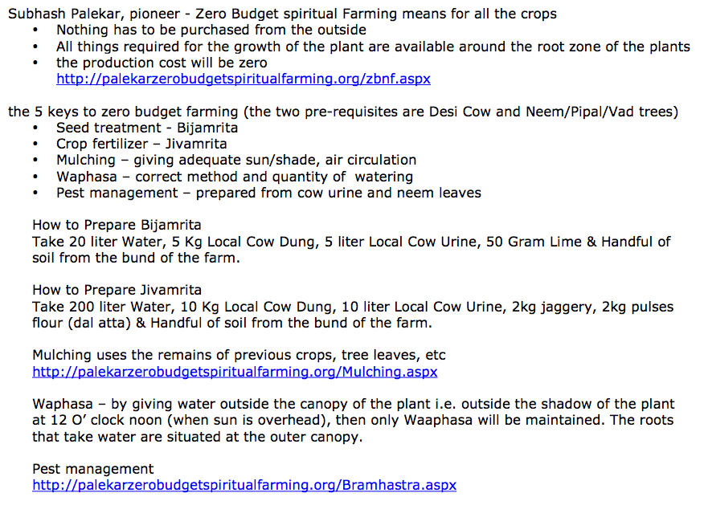
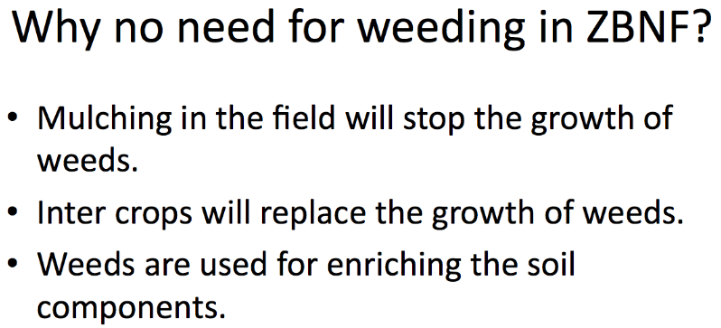
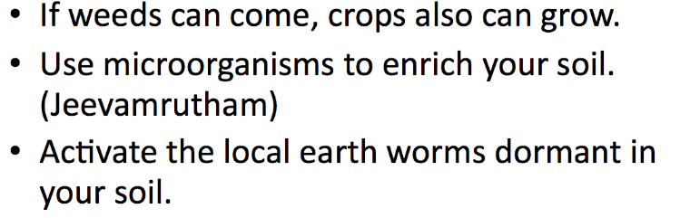
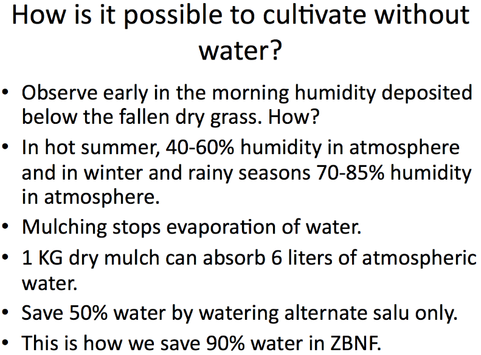
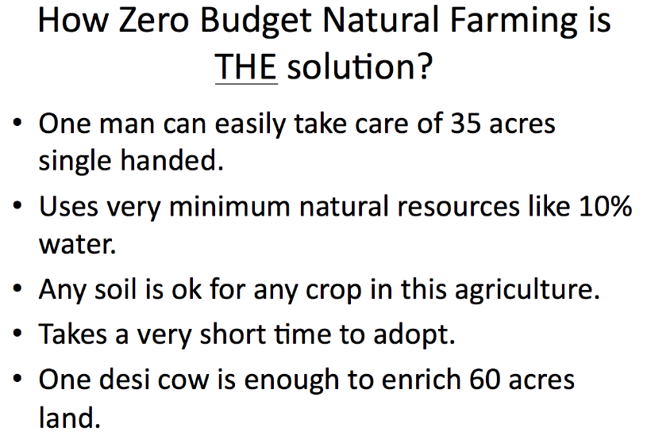
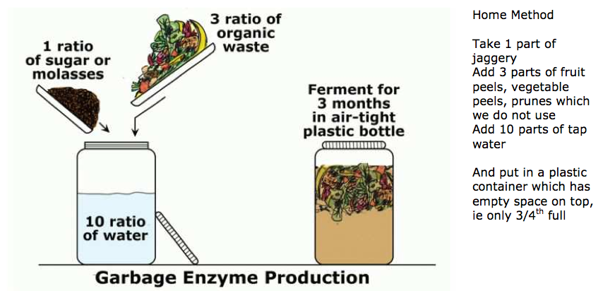

Zero Budjet Natural Farming
References
Zero budjet farming - PDF
Mulching
the 5 keys to zero budget farming (the two pre-requ
isites are Desi Cow and Neem/Pipal/Vad trees)
• Seed treatment - Bijamrita
• Crop fertilizer – Jivamrita
• Mulching – giving adequate sun/shade, air circulation
• Waphasa – correct method and quantity of watering
• Pest management – prepared from cow urine and neem leaves
Add Images --
இயற்கை விவசாயம் , இயற்கை உரம், இயற்கை பூச்சி கொல்லி - DIY series
http://www.indiawaterportal.org/sites/indiawaterportal.org/files/RD%20through%20ZBNF.pdf
http://www.advaita56.org/farming_files/Crop_Rotatio%20ns_on_Organic_Farms.pdf
http://online-raj.blogspot.in/2012/11/diy-series.html
http://online-raj.blogspot.in/2012/07/re-use-re-cycle-nothing-is-waste-in.html
http://online-raj.blogspot.in/2012/06/ancient-tamil-traditions-customs-and.html
http://agritech.tnau.ac.in/ta/success_stories/sucessstories_farmers%20innovation_ta.html
http://gttaagri.relier.in/இயற்கை-விவசாயம்/
http://agasool.blogspot.in
http://www.mssrf-nva.org/?p=3693
ஒரு வாளி தண்ணீரில் அரை கிலோ வெல்லத்தை கரைக்கவேண்டும். மாட்டுசாணம் அரை கிலோ சேர்க்கவேண்டும்.
இக்கலவையை அரைமீட்டர் நிலப்பரப்பில் ஊற்றி அதன்மேல் காய்ந்த சாணம் வைக்கோல் போட்டு அதன் மீது கோணி சாக்கு போர்த்தி மூடிவிடவேண்டும்.
தொடர்ந்து தண்ணீர் தெளித்து வந்தால் இருபது முதல் இருபத்தைந்து நாட்களில் மண்புழு மண்டிக்கொண்டு நிற்கும்.
பிளாஸ்டிக் பாத்திரத்தில் பத்து முட்டைகளை குறுகிய முனை கீழிருக்குமாறு வைத்து அவைகள் மூழ்குமளவிற்கு எலுமிச்சை சாற்றினை விட வேண்டும். அதற்குப்பிறகு இருநூறு கிராம் வெல்லத்தை பூரிதக்கரைசலாக நீரில் கலந்து அப்பாத்திரத்தில் ஊற்றி மூடி வைத்துவிடவேண்டும். பத்து நாட்களுக்கு பிறகு திறந்து பார்த்தால் முட்டை கூழ் வடிவில் மாறிவிடும். இதைக்கையால் பிசைந்து மீண்டும் இருநூறு கிராம் வெல்லக்கரைசலை ஊற்றி பத்து நாட்கள் மூடி வைத்துவிட வேண்டும். அதன் திறந்து பார்த்தால் முட்டை ரசம் தயார். பிறகு அதை வடிகட்டி பத்து லிட்டர் டேங்குக்கு இருநூறு மில்லி வீதம் கலந்து தெளிக்கலாம். மிகச்சிறந்த பயிர் வளர்ச்சி ஊக்கியாகும்.

உணவுக்கு பயன்படாத மீன் கழிவுகளை வாங்கி வந்து அதனுடன் சம அளவு பனை வெல்லம் சேர்த்து பிசைந்து ஒரு பிளாஸ்டிக் ட்ரம்மில் காற்று புகாது வைக்க வேண்டும்
21 நாட்கள் களைத்து பார்த்தால் கரைசல் தயாராகிவிடும்
10 லிட்டருக்கு 100 மில்லி என்ற அளவில் வயலில் தெளிக்கலாம்.
இது ஒரு மிகச்சிறந்த பயிர் வளர்ச்சி ஊக்கி.
இதைப்பற்றி சுரபாலர் கூட விருட்ச சாஸ்திரத்தில் கூறியுள்ளார்.
தேவையான பொருட்கள்:
சாணம்-20 கிலோ,
கெட்டுப்போன பழங்களின் கூழ் - 5 முதல் 10 கிலோ
தொல்லுயிர் கரைசல்-50 கிலோ,
தண்ணீர்-50 லிட்டர்,
ஜீவாமிர்தம் -5-10 லிட்டர்.
தே மோர் (அ) அரப்புமோர் -5-10 லிட்டர்.
இவை அனைத்தும் கலந்து 5 முதல் 7 நாட்கள் நொதிக்கவிட வேண்டும்.
இதன் மூலம் நுண்ணுயிர்கள் பலமடங்கு பெருகும். மாதம் ஒருமுறை வீதம் 5 முறை பாசன நீரில் பழங்காடி கரைசலை சீராகக் கலந்து செல்லும் வகையில் பயன் படுத்த வேண்டும்.
இக்கரைசல் ஒரு மிகச்சிறந்த பயிர் ஊக்கியாகும்.
புளித்த மோர் - 5 லி
இளநீர் - 1 லி
இவற்றை கேனில் ஊற்றவும். 10 தேங்காய்களின் துருவல், அழுகிய பழங்கள் 10 கிலோ இவற்றை சாக்கு பையில் பொட்டலம் போல் கட்டி அதில் போடவும். ஏழாம் நாளில் ஊறல் தயாராகி விடும்.
1 ஏக்கருக்கு 10 லிட்டர் தண்ணீரில் அரை லிட்டர் தேமோர் கரைசல் சேர்த்து தெளிக்கவும்.
It is equivalent to Biozyme & Cytozyme
IDU porul - Organic Manure
- Coffee powder
- Tea dust
- Egg Shell
- panchakavya
- Amutha karisal
- Meen Amilam
- illai potu sanam idu
- pazhakadi
- Thee more karaisal
- Archae Bacteria karaisal
- Muttai Rasam
- Garbage Enzyme Production
Moodaku - Mulching
- Coconut Husk
- Coffee powder
- Tea dust
| |
ஒரு வாளி தண்ணீரில் அரை கிலோ வெல்லத்தை கரைக்கவேண்டும். மாட்டுசாணம் அரை கிலோ சேர்க்கவேண்டும்.
இக்கலவையை அரைமீட்டர் நிலப்பரப்பில் ஊற்றி அதன்மேல் காய்ந்த சாணம் வைக்கோல் போட்டு அதன் மீது கோணி சாக்கு போர்த்தி மூடிவிடவேண்டும்.
தொடர்ந்து தண்ணீர் தெளித்து வந்தால் இருபது முதல் இருபத்தைந்து நாட்களில் மண்புழு மண்டிக்கொண்டு நிற்கும். |
| |
11. அமிர்த கரைசல் தயாரிக்கும் முறை
நிலவள ஊக்கி ஆன அமிர்த கரைசலை தயாரிக்கும் முறை:
· மாடு ஒருமுறை போட்ட சாணம், (எந்த மாடாக இருந்தாலும் பயன்படுத்தலாம்) ஒருமுறை பெய்த மூத்திரம், இவற்றை ஒரு பிளாஸ்டிக் வாளியில் எடுத்துக் கொண்டுஅதில் ஒருகைப்பிடிவெல்லம், ஒருகுடம் தண்ணீர் ஆகியவற்றை சேர்க்க வேண்டும்.
· 24 மணி நேரம் நிழற்பாங்கான இடத்தில் வைக்க வேண்டும்.
· அமிர்த கரைசல் தயார். |
| |
22. பஞ்சகாவ்யா தயாரிப்பு முறை
தேவையான பொருட்கள் :
1. மாட்டு சாணம்,
2. மாட்டு சிறுநீர்,
3. மாட்டுப்பால்,
4. தயிர் மற்றும்
5. நெய்
1. முதலில் 5 கிலோ பிரெஷ் பசுமாடு சாணம் எடுத்து கொள்ளவும்
2. அதில், 3 லிட்டர் பசு மூத்திரம் சேர்க்கவும்
3. அதில், 2 லிட்டர் பசும்பால் சேர்க்கவும்
4. இரண்டு லிட்டர் புளித்த தயிரை சேர்க்கவும்
5. அரை கிலோ பசும் நெய் சேர்க்கவும்
Additionally:
- இந்த கூட்டில், மூன்று தேங்காய் இளநீர் சேர்க்கவும்.
- ஒரு டசன் நல்ல பழுத்த, அல்லது அழுகிய வாழை பழம் சேர்க்கவும்
- சிறிது சுண்ணாம்பை (slacked lime) சேர்க்கவும்
- கையளவு உயிர் மண்ணை (living soil) சேர்க்கவும்
- கையளவு வெல்லம் சேர்க்கவும்
இந்த திரவத்தை, வேப்பம்குச்சி ஒன்றால் நன்றாக கலக்கவும். தினமும் திறந்து, சில நேரம் கலக்கவும். 20 நாட்களுக்கு பின் பஞ்சகாவ்யா ரெடி. அதன் பின் பஞ்சகவ்யவை உபயோகம் செய்யலாம். 30-50 லிட்டர் நீரில் ஒரு லிட்டர் சேர்க்கலாம் |
| |
தசகாவ்யா தயாரிப்பு முறை
தசகாவ்யாஒரு அங்கக தயாரிப்பு.
இதில் பத்து வகையான பொருட்கள் சேர்க்கப்பட்டுள்ளன.“காவ்யா” என்பது மாட்டினுடைய பொருட்களைக் குறைக்கும்.
இதனை பக்குவமாகக் கலந்து செடிகளுக்கு இட்டால் அதன் வளர்ச்சி அதிகமாக இருக்கும்.
வெப்பமண்டலப் பகுதிகளில் உள்ள செடிகளுக்கு தசகாவ்யாவை பரிந்துரைக்கப்பட்டுள்ளது.அவை
1. Thumbai chadi
2. கொலின்ஜி (டெப்ரோசியா பர்ப்யூரியா),
3. உமதை (டட்டுரா மிட்டல்),
4. எருக்கம் (கேலோடிராபிஸ்),
5. நொச்சி (விட்டெக்ஸ் நெகுண்டோ),
6. புங்கம் (பொங்கேமியா பின்னட்டா),
7. காட்டாமணக்கு (ஜட்ரோபா கர்கஸ்),
8. அடத்தோடா (அடத்தோடா வேசிகா) மற்றும்
9. வேம்பு(அசாடிரக்ட்டா இன்டிகா),
10. பஞ்சகாவ்யா |
| |
4. ஜீவாமிர்தம் தயாரிப்பது எப்படி ?
தேவையான பொருட்கள்:
- நாட்டு பசுஞ்சாணம்-10 கிலோ, (அல்லது நாட்டு பசுஞ்சாணம் 5 கிலோ + நாட்டு காளைமாட்டுச் சாணம் 5 கிலோ (அ) நாட்டு எருமைமாட்டுச்சாணம் 5 கிலோ)
- நாட்டு பசுங்கோமியம் 5 முதல் 10 லிட்டர் (அல்லது நாட்டு பசுங்கோமியம் பாதி அளவு + (அ) நாட்டு காளைமாட்டு கோமியம் (அ) நாட்டு எருமைமாட்டு கோமியம்,
- வெல்லம் (கருப்பு நிறம்) 2 கிலோ (அ) கரும்புச்சாறு 4 லிட்டர்,
- இரு விதை இலைத் தாவரங்களின் தானிய மாவு 2 கிலோ (தட்டைப்பயறு (அ) துவரை (அ) கொள்ளு (அ) கொண்டைக் கடலை (அ) உளுந்து) (பவுடராக அல்லது
முளைக்கட்டச்செய்து அரைக்கப்பட்டதாக இருப்பது அவசியம்)
- பண்ணைகளின் வரப்பிலிருந்து எடுக்கப் பட்ட காட்டின் (ஜீவனுள்ள) மண் கையளவு மற்றும்
- தண்ணீர் 200 லிட்டர் (குளோரின் கலக்காதது)
தயாரிப்பு முறை:
இவற்றைத் தொட்டியில் விட்டு கலக்க வேண்டும் தினமும் 3 முறை 3 நாட்களுக்கு தவறாமல் கலக்கி விடவேண்டும். ஒரு கிராம் மண்ணில் 5 லட்சம் கோடிக்கும் அதிகமான் நுண்ணுயிரிகள் இருக்கின்றன் .ஒவ்வொரு 20 நிமிடத்துக்கும் இந்த நுண்ணுயிரிகள் இரட்டிப்பு அடைகின்றன். இந்த நுண்ணுயிர் கலவைதான் ஜிவாமிர்தம்.
பயன்படுத்தும் முறை:
ஜிவாமிர்தம் எல்லா வகை பயிர்களுக்கும் நீரில் கலந்து பயன்படுத்தலாம். எந்த கட்டுப்பாடும் இல்லை. |
| |
5. பழகரைசல் :
இது பயிர்களுக்கு நல்ல ஊட்டசத்து மருந்தாக செயல்படுகிறது .
தேவையான பொருட்கள் :
௧.அமில தன்மை அற்ற கனிந்த பழம் ( பப்பாளி , நெல்லி , கொய்யா , வாழை, பனம் ,...) 10 கிலோ
௨. நாட்டு மாட்டு சிறுநீர் 1 லிட்டர்
செய்முறை :
பழத்தை சுமார் 15 லி கொள்ளவுள்ள பாத்திரத்தில் போட்டு இறுக்கமாக மூடிவிடவும், 2 நாள் கழித்து மா மூத்திரத்தை ஊற்றி நன்கு கலக்கி விடவ
ும் . தினமும் நன்கு கலக்கி விடவும் . 30 நாள் கரைசல் தயார் .
பயன் பாடு :
௧. இதனை 1 :10 என்ற விகிதத்தில் தண்ணீருடன் கலந்து பயிர்களுக்கு கொடுக்கலாம் .
௨.இதனை ஜீவமிர்தடிற்கு மாற்றாக பயன் படுத்தலாம் .
௩.பயிர்களின் நோயெதிர்ப்பு மற்றும் வளர்ச்சியை அதிகரிக்கும் .
௪.பழ குப்பைகளுக்கு சிறந்த மறுசுழற்சி முறை . |
| |
7. தேமோர் கரைசல்
- புளித்த மோர் - 5 லி
- இளநீர் - 1 லி
- 10 தேங்காய்களின் துருவல்
- அழுகிய பழங்கள் 10 கிலோ
இவற்றை கேனில் ஊற்றவும். 10 தேங்காய்களின் துருவல், அழுகிய பழங்கள் 10 கிலோ இவற்றை சாக்கு பையில் பொட்டலம் போல் கட்டி அதில் போடவும். ஏழாம் நாளில் ஊறல் தயாராகி விடும்.
1 ஏக்கருக்கு 10 லிட்டர் தண்ணீரில் அரை லிட்டர் தேமோர் கரைசல் சேர்த்து தெளிக்கவும்.
It is equivalent to Biozyme & Cytozyme |
| |
8. Archae பாக்டீரியா கரைசல்:தொல்லுயிரி கரைசல் - பயிர் ஊக்கி
- புதிய சாணம் 5 கிலோ,
- தூள்வெல்லம் முக்கால் கிலோ,
- கடுக்காய்த்தூள் 25 கிராம்
- அதிமதுரம் இரண்டரை கிராம்
50 லிட்டர் பிளாஸ்டிக் கேன் ஒன்றை எடுத்துக்கொள்ளவும்.
புதிய சாணம் 5 கிலோ, தூள்வெல்லம் முக்கால் கிலோ, கடுக்காய்த்தூள் 25 கிராம் கேனில் போட்டுக்கலக்கவும். அதிமதுரம் இரண்டரை கிராம் எடுத்து அரை லிட்டர் நீரில் வைத்து அதையும் கேனில் ஊற்றி மூடவும். இரண்டு நாள் கழித்து பார்த்தால் கேன் உப்பி இருக்கவும். மூடியை திறந்து மீத்தேன் வாயுவை வெளியேற்றவும். 10 நாட்களுக்கு பிறகு தொல்லுயிரி கரைசல் தயார்.
200 லிட்டர் தண்ணீர் + 1 கேன் பாக்டீரியா கரைசல் - 1 ஏக்கர்
10 லிட்டர் தண்ணீர் + 1 லிட்டர் தொல்லுயிரி ஸ்பிரே பண்ணலாம்
archae பாக்டீரியா உலகின் முதல் பாக்டீரியா ஆகும்.
இக்கரைசல் மிகச்சிறந்த பயிர் ஊக்கியாகும். |
| |
§ மர நிழல் உள்ள சுத்தமான, சமமான இடத்தை தேர்வு செய்து கொள்ளவேண்டும்.
§ செங்கல்களை பக்கவாட்டில் அடுக்கி 2 மீ X 2 மீ அளவுள்ள தொட்டி போல் அமைத்து கொள்ளவேண்டும்.
§ புல் மற்றும் மர வேர்களின் வளர்ச்சியை அசோலா குழியினில் தடுக்க தொட்டியின் கீழே உர சாக்கினை பரப்பி விட வேண்டும் § அதன் மேல் சில்பாலின் பாயை ஒரே சீராக பரப்பிவிட வேண்டும்.
§ சில்பாலின் பாயின் மீது 10-15 கிலோ சலித்த செம்மண்ணை சம அளவில் பரப்பிவிட வேண்டும்.
§ புதிய சாணம் 2 கிலோ மற்றும் 30 கிராம் சூப்பர் பாஸ்பேட்டை 10 லிட்டர் நல்ல தண்ணீரில் கலந்து ஊற்ற வேண்டும்.
§ மேலும் தண்ணீரை 10 செ.மீ. உயரம் வரை ஊற்ற வேண்டும்.
§ 500 – 1 கிலோ அசோலா விதைகளை அதன் மேல் தூவி லேசாக தண்ணீர் தெளிக்கவும்.
§ ஒரு வாரத்தில் அசோலா நன்றாக வளர்ந்து தொட்டி முழுவதும் பரவி இருக்கும்.
§ தினமும் 500 கிராம் அசோலா அறுவடைக்கு புதிய சாணம் 1கிலோ மற்றும் 20 கிராம் சூப்பர் பாஸ்பேட்டு கலந்த கலவையை ஒவ்வொரு 5 நாட்களுக்கு ஒரு முறை தொட்டில் இடவேண்டும்.
§ மெக்னீசியம், இரும்பு, தாமிரம் மற்றும் சல்பர் கலந்த நுண்ணூட்ட கலவையை ஒவ்வொரு வாரத்திற்கு ஒருமுறை இட்டால் அவை அசோலாவில் தாது உப்புகளின் அளவை அதிகரிக்கும்.
§ மாதம் ஒரு முறை மூன்றில் ஒரு பங்கு மண்ணை மாற்றி புதிய மண்ணை இடவேண்டும்.
§ 10 நாட்களுக்கு ஒரு முறை மூன்றில் ஒரு பங்கு தண்ணீரை மாற்றி புதிய தண்ணீரை ஊற்ற வேண்டும்.
§ அசோலா விதைகளை தவிர ஆறு மாத்த்திற்கு ஒரு முறை அனைத்து இடு பொருட்களையும் வெளியேற்றி பின்னர் புதியதாக |
| |
10. தானியக் கரைசல் தயாரிப்பது எப்படி?
தேவையான பொருள்கள் :
1. உளுந்து -100 கிராம்
2. பச்சைப் பயறு -100 கிராம்
3. காராமணி -100 கிராம்
4. கொண்டைக்கடலை -100 கிராம்
5. கொள்ளு -100 கிராம்
6. எள்-100 கிராம்
7. கேழ்வரகு அல்லது கோதுமை -100 கிராம்
தயாரிப்பு முறை :
முதல் நாள் எள்ளை மட்டும் தனியாக ஊறவைத்து .துணியில் கட்டி முளைக்கட்ட வைக்க வேண்டும் .மறுநாள் மீதி அனைத்துத் தானியங்களையும் ஒன்றாகக் கலந்து முளைக்கட்ட வைக்க வேண்டும் முளைக்கட்டிய பிறகு ,அனைத்தயும் விழுதாக அரைத்து 10 லிட்டர் மாட்டுச்சிறுநீரில் கலந்து ,200 லிட்டர் தண்ணீர் சேர்த்து , ஜீவாமிர்தத்தைக் கலக்குவது போல் கலக்கி விட வேண்டும்.இதை 24 மணி நேரம் கழித்து பயன்படுத்தலாம்.
|
| |
11. திறன் நுண்ணுயிர் எப்படி தயாரிப்பது?
தேவையான பொருட்கள்:
1. 10-க்கும் மேற்பட்ட மரம், செடி, கொடிகளின் வேர் பகுதி மண் அரை கிலோ,
2. பரங்கிப் பழம் 2 கிலோ,
3. பப்பாளிப் பழம் 2 கிலோ,
4. சாராய வெல்லம் 1 கிலோ,
5. நாட்டுக்கோழி முட்டை 2 அல்லது 3,
6. குடிநீர் தேவையான அளவு,
7. வாய் அகன்ற பிளாஸ்டிக் பாத்திரம் 20-30 லிட்டர் கொள்ளளவு கொண்டது.
தயாரிப்பு முறை:
நன்கு செழிப்பான, நோய் தாக்கமில்லாத 10 வகையான மரம், செடி, கொடி வகைகளின் வேர்ப்பகுதியிலிருந்து வேர் மற்றும் மண்ணை சேகரித்துக்கொள்ள வேண்டும். 1 மரம், செடி, கொடி வகைகளிலிருந்து 500 கிராம் வீதம் 10 மரம், செடி, கொடி வகைகளிலிருந்து மண்ணை சேகரிக்கலாம். இதனை பிளாஸ்டிக் பாத்திரத்தில் எடுத்து கொண்டு, பரங்கியும், பப்பாளிப்பழம் மற்றும் சாராய வெல்லம் ஆகியவற்றை பிசைந்து போடவேண்டும். பிறகு நல்லநீரை மண், பப்பாளி, பரங்கி, வெல்லம் ஆகியவை மூழ்கும் வரை ஊற்றவேண்டும். பிறகு முழு நாட்டுக்கோழி முட்டையை அதனுள் போடவேண்டும். பிளாஸ்டிக் பாத்திரத்தை நன்கு மூடி, நிழலில் வைக்க வேண்டும். காற்றோட்டத்துக்காக காலையிலும், மாலையிலும் பிளாஸ்டிக் பாத்திரத்தை திறந்து மூடவேண்டும்.
30 நாள்களுக்குப் பிறகு திறன் நுண்ணுயிரி கலைவையை பயன்படுத்தலாம். 6 மாதம் வரை இக்கலவையை பயன்படுத்தலாம்.
திறன் நுண்ணுயிர் எப்படி பயன்படுத்துவது?
பயன்படுத்தும் முறை:
பாதிக்கப்பட்ட தென்னையின் அடிப்பாகத்தில் மூடாக்கு எனப்படும் முறையை பயன்படுத்தி (தென்னை ஓலை அல்லது மட்டையால் வேர் பகுதியை மூடுதல்) அதன்மேல் நுண்ணுயிரி கலவையை ஊற்ற வேண்டும். (30 லிட்டர் நீருடன் 1 லிட்டர் திறன் நுண்ணுயிரி கலந்து தெளிக்கலாம்). இக்கலவையை பயன்படுத்துவதன் மூலம் மண்ணின் வளம் அதிகரிக்கிறது. இதனால் இடுபொருள் செலவு குறைவு, ஈரப்பதத்தை கட்டுப்படுத்துதல், குறைவான கூலி, காய்களின் நிறம், வடிவம், அளவு மற்றும் சுவை அதிகரிப்பு. பஞ்சகவ்யம் மற்றும் திறன் நுண்ணுயிரி கலவை வாடல் நோயால் மரம் பாதிக்காத வகையில் காக்கும் என்றார். |
| |
12. கனஜீவாமிர்தம்:
தேவையான பொருட்கள் :
1. நாட்டு மாட்டுச் சாணம்-100 கிலோ,
2. மாட்டுச் சிறுநீர்-10 லிட்டர்,
3. வெல்லம்-2 கிலோ,
4. சிறுதானிய மாவு-2 கிலோ
ஆகியவற்றை நன்றாகக் கலக்கி மண்தரையில் பரப்பி, நிழலில் உலர வைத்து, பத்திரப்படுத்தி வைத்துக் கொள்ளலாம். தூளாக, உள்ள கன ஜீவாமிர்தம், பயன்படுத்த எனக்கு எளிதாக இருக்கிறது. உருண்டையாக பிடித்து வைத்தும் பயன்படுத்தலாம். தேவைப்படும்போது 10 லிட்டர் மாட்டுச் சிறுநீரை அதன் மீது தெளித்து, ஈரப்படுத்திக் கொண்டு பயன்படுத்தலாம். |





Coconut husk - water retention properties
Subash Palekar's zero budget
http://www.indiawaterportal.org/sites/indiawaterportal.org/files/RD%20through%20ZBNF.pdf
Organic water Preparation
C.J.Skaria Pillai from Palakkad and he had bought some land in Nallepilly and found that land was quite dry and wind was very strong. He was looking for a solution to increase the water retention properties of the soil and tried the waste of coconut husk which comes after making coir. He spread it and used that place for vegetable cultivation and he got amazing results and then he bought this waste in large quantities and incorporated into soil after ploughing and also put some cow dung and land recovered well.

Collect Coffee Grounds
Collect Tea dust
Collect Egg Shell
Types of Mudaku -- Stone, Coconut Shell,
Apply BioFertilizer --
Azolla Cultivation
Banana Planting -
Rain Harvesting - During rainy season
Visit --- Vanagam
Collect green leaf from Garden
Moodaku - Increase microorganism in soil. Prevent water evaporation.
Plant - Ground nut.
Plant - Corn ()
Prepare an Instrument
Watch DD - News (Farming)
Radio Velanmai News
Buy Earthworms
Earn Money through Farming
Earthworms and Msushroom planting
Waste Resource -- Garden waste, Tea shop, Egg shell,
Nitrogen supplying Plant / Bacteria
Neela pachai pasi
Azolla
Rhizo Bacteria -- Available in roots (Pasi payiru, ulundu, kollu, avarai, thuvarai, agathi, )
Azo bacteria
Azoto bacteria
Phosphobacteria -- Phosphorus
Azospirillum -- nitrogen fixing biofertilizer
Rhizobium -- nitrogen fixing biofertilizer
Potash Mobilizer --
http://www.manidharmabiotech.com/
நம்மாழ்வார் ஐயா புத்தகங்கள்
1. தாய் மண் - 375/-
2. இயற்கை இடுபொருள்கள் - 20/-
3. பூமித் தாயே - 100/--
4. மசானபு ஃபுகோகா இயற்கைக்குத் திரும்பும் பாதை - 200/-
5. நோயினைக் கொண்டாடுவோம் - 15/-
6. வேளாண் மக்கள் ஆவணம் - 40/-
7. விதைகளே பேராயுதம் - 60/-
8. மண்புழு - 50/-
9. தாய் மண்ணே வணக்கம் - 100/-
10. வயிற்றுக்கு சோறிடல் வேண்டும் - 100/-
மற்ற புத்தகங்கள் :
11.ஒற்றை வைக்கோல் புரட்சி - 120/-
12.பாரம்பரிய உணவுகள் - 30/-
13.தடுப்பூசியின் உண்மைகள் 30/-
ம.செந்தமிழன் புத்தகங்கள் :
12. இனிப்பு (சர்கரை நோயிலிருந்து விடுதலை) - 80/-
13. இனிய வழியில் சுகப் பிரசவம் - 40/-
14. மரபுச் சுவை - 40/-
15. அவர்களால் தான் நம்மைக் காப்பாற்ற முடியும் – 60-
16. பூமியில் முதல் மழை பெய்த போது மரங்கள் இல்லை - 60/-
17. தெய்வம் உணாவே – 60/-
நம்மாழ்வார் ஐயாவின் விகடன் பதிப்பக நூல்கள் :
1. உழவுக்கு உண்டு வ்ரலாறு
2. அ முதல் அக் வரை
3. எந்நாடுடைய இயற்கையே போற்றி
4. பூச்சிகளின் நண்பன் – 75-
நம்மாழ்வார் ஐயாவின் DVD :
1. ஏன் வேண்டும் இயற்கை வேளாண்மை & ஒற்றை வைக்கோல் புரட்சி - 70/-
2. சிறு தானியங்கள் & வடப்பாத்தி நிரந்தர வேளாண்மை – 70/-
3. எண்டோசல்பான் – 50/-
4. முன் மாதிரி இயற்கை வேளாண் பண்ணைகள் – 70/-
5. இயற்கைக்குத் திரும்பும் பாதை – 2 டிவிடி – 140/-
6. நிரந்தர வேளாண்மை - 70/-
7. நம்மாழ்வார் ஆவேச உரை – 70/-
8. இயற்கை இடுபொருள்கள் செய்முறை – 70/-
9. உணவே மருந்து - 70/-
இடம் : அண்ணா ஜெம் அறிவியல் பூங்கா பள்ளி,
காந்தி மண்டபம் சாலை, அண்ணா பல்கலைக்கழகம் அருகில், சென்னை – 25.
தொடர்புக்கு : 95000 82131 , 98431 27804, 94435 75431.
https://www.facebook.com/groups/vanagam/
https://www.youtube.com/watch?v=MindIXXcF4M&feature=youtu.be
https://www.youtube.com/watch?v=ejkG4iSGbXg&feature=youtu.be
https://www.youtube.com/watch?v=lfC19DSaA9k&list=PLolIhjrG_0RahxtX3lDg2jZJ5r_LaK30e&feature=share&index=78
https://www.youtube.com/watch?v=wmYIVWbSE0g
http://thealternative.in/environment/composting-with-vani-murthy-vermi-composting-with-earthworms/
Ellai potu sanam idu
Amutha karaisal
Panjakavya
Meen Amilam
Muttai Rasam
ஜீரோ பட்ஜெட் விவசாயம் -----மண்புழு
மண்புழு பற்றிய டிப்ஸ்:
மண்புழுக்கள், அள்ள அள்ளக் குறையாமல் மண்ணில் பொதிந்து கிடக்கும் சத்துக்களை வெளியே
கொண்டு வந்து பயிர்களுக்குக் கொடுக்கும். காசில்லாமல் வேலையைச் செய்யும் ஆட்கள் தான் இந்த மண்புழுக்கள்.
மண்புழுக்கள் இருட்டை விரும்பும். அதனால் தான் மண்ணின் அடி ஆழத்தில் சென்று வாழுகின்றன.
மேல் மட்டத்தில் உணவும், வாழ்வதற்குச் சாதகமான சூழ்நிலையும் இல்லாத போது அவை மண்ணுக்குள் புகுந்து விடுகின்றன.
மண்புழுக்களை எப்போதும் சுறுசுறுப்பாக வைத்திருக்கக்கூடிய ஆற்றல் நாட்டு மாட்டின் சாணத்தில் மட்டுமே உண்டு.
இந்தச் சாணத்தை மண்ணின் மீது வைத்து விட்டாலே போதும். நம் பயிருக்குத் தீங்கு செய்யும் நுண்ணுயிரிகளைச் சாப்பிடும்.
பொழிகின்ற மழை நீர், இதன் காரணமாக உங்கள் நிலத்தில் இறங்கி நீர்மட்டம் உயரும்.
பயிருக்கு வேண்டிய சத்தான உரத்தை ஒரு பக்கம் கொடுப்பது மட்டுமல்லாமல், நீர்ச்சேமிப்புக்கும் அவை உதவுகின்றன.
மண்புழுக்களின் உடல் மீது நீர்ப்பட்டால் அதுவும் உரமாக மாறி விடும். இதை
வெர்மிவாஷ் என்று சொல்கிறார்கள். பயிர்களின் வளர்ச்சியைத் துரிதப்படுத்தும் திறனும், அதிகமாக காய்ப்பிடிக்க வைக்கும் தன்மையும் இந்த வெர்மிவாஷீக்கு உண்டு.
மண்ணில் இயற்கையாகவே உள்ளச் சத்துக்களை மண்புழுக்கள் மேலே கொண்டு வந்து சேர்க்கின்றன.
சுமார் 15 அடி ஆழம் வரை அவை சர்வ சாதாரணமாக சென்று வருகின்றன. 7 அடி ஆழத்தில் தழைச்சத்து உள்ளது.
மண்ணிற்கு அடியில் பாஸ்பரஸ் இருக்கிறது. 11 அடியில் சாம்பல்
சத்து இரும்பு, 10 அடியில் கந்தகம் எனச் சத்துக்கள் கொட்டிக் கிடக்கின்றன. இவற்றை மேலேக் கொண்டு வந்து சேர்க்கின்ற உன்னதப் பணியினை இந்த மண்புழுக்கள் செய்கின்றன.
லாபகரமான விவசாயத்திற்கு ஒரே தீர்வு - இயற்கை விவசாயம்

லாபகரமான விவசாயத்திற்கு ஒரே தீர்வு - இயற்கை விவசாயம்
புதுப்புது யுக்திகளைப் புகுத்தி, புத்திசாலித்தனமாக செயல்படுவர்களுக்கு... விவசாயம், பொன்முட்டையிடும் வாத்துதான்’ என்பதை நிரூபித்து வருகிறார், எழுபத்து இரண்டு வயதைக் கடந்த மூத்த விவசாயி 'கேத்தனூர்’ பழனிச்சாமி. கேத்தனூர், ஆறு, குளம், வாய்க்கால்... என இயற்கை நீராதாரத்த
ுக்கு வாய்ப்பில்லாத ஊர். ஆயிரத்து இருநூறு அடிக்கும் கீழே போய்விட்ட நிலத்தடி நீர் மட்டம். வறண்டு கிடக்கும் பாசனக் கிணறுகள்... இப்படியான சூழலிலும் 'பந்தல்’ விவசாயத்தில் முடிசூடாத மன்னராக அரை நூற்றாண்டு காலம் அசத்தி வரும், பழனிச்சாமியின் வெற்றிச் சூத்திரத்தை அறிந்து கொள்ள... திருப்பூர் மாவட்டம், பல்லடம் அருகேயுள்ள கேத்தனூர் கிராமத்தில் உள்ள பழனிச்சாமி அவர்கள் கூறியதாவது
வாழ்க்கையை மாற்றிய கல்பந்தல்!
88-ம் வருஷம் வரைக்கும் திராட்சை சாகுபடிதான். கூடவே, கத்திரி, தக்காளி, மிளகாய்னு காய்கறி விவசாயமும். 89-ம் வருஷத்துல இருந்து பந்தல்ல காய்கறி சாகுபடி செஞ்சுட்டுருக்கேன். இப்போ, நாலு ஏக்கர்ல பாகல், மூணு ஏக்கர்ல பீர்க்கன், நாலு ஏக்கர்ல புடலை, ஒரு ஏக்கர்ல கோவைக்காய்னு மொத்தம் 12 ஏக்கர்ல பந்தல் விவசாயம் செய்றேன்.
நல்வழி காட்டிய நம்மாழ்வார்!
ஆரம்பத்துல, லாரி லாரியா உரத்தைக் கொண்டு வந்து கொட்டி, ரசாயன விவசாயம்தான் செஞ்சேன். அதேமாதிரி, வீரியமான பூச்சிக்கொல்லிகளைத்தான் தெளிச்சுட்டிருந்தேன். பகல் முழுக்க என் பண்ணையில பவர் ஸ்பிரேயர் ஓடுற சத்தம் கேட்டுக்கிட்டேதான் இருக்கும். ஒவ்வொரு முறையும் கணக்கு பாக்குறப்போ, உற்பத்திச் செலவுதான் அதிகமா இருந்துச்சு. லாபம் கம்மியா இருந்துச்சு. 'செலவை எப்படி குறைக்கலாம்?’னு பலர்கிட்ட யோசனை கேட்டுட்டிருந்த சமயத்துலதான், நம்மாழ்வார் பத்திக் கேள்விப்பட்டேன். அவரைத் தேடிப்போய் சந்திச்சுப் பேசி பல தகவல்களைத் தெரிஞ்சிக்கிட்டேன்.
'இயற்கை விவசாயம்தான் லாபகரமான விவசாயத்துக்கு ஒரே தீர்வு’னு முடிவு செஞ்சேன். கொஞ்சம் கொஞ்சமா மாற ஆரம்பிச்சுட்டேன்.
பஞ்சகவ்யா, மூலிகைப் பூச்சிவிரட்டி, மீன் அமிலம், அரப்பு-மோர் கரைசல்னு இயற்கை இடுபொருட்களை நானே தயாரிச்சு, பயிர்களுக்குக் கொடுத்ததுல நல்ல பலன் கிடைச்சது. அப்படியே, சுபாஷ் பாலேக்கரோட 'ஜீரோ பட்ஜெட்’ பயிற்சி வகுப்புலயும் கலந்துகிட்டு பயிற்சி எடுத்த பிறகு, முழுக்க முழுக்க இயற்கைக்கு மாறிட்டேன். கலப்பின பசுமாடுகளைக் குறைச்சுட்டு, காங்கேயம் மாடுகளை வாங்கினேன். அதுங்களோட சாணம், மூத்திரத்தை வெச்சு, ஜீவாமிர்தம், கனஜீவாமிர்தம், அமுதக்கரைசல்னு எல்லா இடுபொருட்களையும் தயாரிக்கிறேன்'' என்ற பழனிச்சாமி... புடலை பந்தலுக்குள் அழைத்துச் சென்றார்.
பந்தலுக்குள் வரிசையாகத் தொங்கிக் கொண்டிருந்த முற்றிய வெளிர் பச்சை நிற குட்டைப்புடலங்காய்களைப் பறித்து, சிறிய தள்ளுவண்டிகளில் சில பெண்கள் கொட்ட, அதை அப்படியே களத்து மேட்டுக்கு உருட்டி சென்று கொண்டிருந்தனர், சில ஆண்கள். அந்த பந்தலுக்குள் நின்றவாறே, பந்தல் காய்கறி சாகுபடி செய்யும் விதத்தைச் சொல்ல ஆரம்பித்தார், பழனிச்சாமி.
அதை அப்படியே பாடமாகத் தொகுத்திருக்கிறோம்.
ஏக்கருக்கு 1,25,000 ரூபாய்!
'நடவு செய்ய வேண்டிய நிலத்தை உழுது, கல்தூண்களை ஊன்றி கம்பிகளைக் கட்டி பந்தல் அமைக்க வேண்டும். ஒரு ஏக்கர் நிலத்தில் பந்தல் அமைக்க கிட்டத்தட்ட ஒன்றேகால் லட்ச ரூபாய் வரை செலவாகும். ஒருமுறை கல்பந்தல் அமைத்து விட்டால்... கம்பிகள் 50 வருடம் வரையிலும், தூண்கள் 100 வருடங்களுக்கு மேலும் பயன்தரும். பந்தல் அமைத்த பிறகு, 16 அடி இடைவெளியில் தென்வடலாக பார் அமைத்து, சொட்டு நீர்ப்பாசனக் கருவிகளைப் பொருத்திக் கொள்ளவேண்டும். ஏக்கருக்கு தலா, ஒன்றரை கிலோ அசோஸ்பைரில்லம், பாஸ்போ-பாக்டீரியா ஆகியவற்றை 12 டன் தொழுவுரத்தில் கலந்து, பார் பாத்திகளுக்குள் தூவி... 5 அடி இடைவெளியில் இரண்டரை அடி அகலம் கொண்ட வட்டக்குழிகளை அமைக்க வேண்டும்.
விதைநேர்த்தி அவசியம்!
புடலை 200 நாள் பயிர். தரமான நாட்டு விதைகளை (ஏக்கருக்கு 400 கிராம் தேவைப்படும்) அரைலிட்டர் பஞ்சகவ்யாவில் இட்டு, 12 மணி நேரம் ஊற வைத்து எடுத்து நிழல் தரையில் பரப்பி, உலர வைக்க வேண்டும். இப்படி விதைநேர்த்தி செய்யும் போது முளைப்புத்திறன் அதிகரிக்கும். ஒரு குழிக்கு மூன்று விதைகள் என்ற கணக்கில் படுக்கை வசமாக நடவு செய்து... ஒரு நாள் விட்டு ஒரு நாள் என்ற கணக்கில் பாசனம் செய்யவேண்டும். நடவு செய்த 16-ம் நாளில் களை எடுக்க வேண்டும். தொடர்ந்து மூன்று மாதங்கள் வரை, 15 நாட்களுக்கு ஒரு முறை களை எடுக்க வேண்டும்.
வளர்ச்சிக்குப் பிண்ணாக்கு... பூச்சிக்கு புளித்த மோர்!
ஒவ்வொரு முறை களை எடுக்கும்போதும், ஒவ்வொரு செடியின் தூரிலும் அரை லிட்டர் பிண்ணாக்குக் கரைசலை ஊற்ற வேண்டும். நடவு செய்த 18-ம் நாளில் 10 லிட்டர் தண்ணீருக்கு, 250 மில்லி அரப்பு-மோர் கரைசல் என்ற விகிதத்தில் கலந்து, அனைத்து செடிகள் மேலும் படும்படி விசைத்தெளிப்பான் மூலம் புகைபோல் தெளிக்க வேண்டும். 23-ம் நாள் 10 லிட்டர் தண்ணீருக்கு, 300 மில்லி பஞ்சகவ்யா என்ற கணக்கில் கலந்து செடிகள் மேல் செழிம்பாகத் தெளிக்க வேண்டும்.
நடவிலிருந்து 20 நாட்களுக்கு ஒரு முறை, 100 மில்லி புளித்த மோர், 50 கிராம் சூடோமோனஸ் ஆகிய இரண்டையும் 10 லிட்டர் தண்ணீரில் கலந்து தேவைப்படும் அளவுக்குத் தெளிக்க வேண்டும். இது இலைப்பேன் மற்றும் அசுவிணி உள்ளிட்ட பூச்சிகளைக் கட்டுப்படுத்தி, செடிகள் ஒரே சீராக வளர உதவி செய்கிறது. நடவு செய்த 60-ம் நாளுக்குப் பிறகு, 10 லிட்டர் தண்ணீருக்கு, 200 மில்லி புளித்த மோர், 100 கிராம் சூடோமோனஸ் என அளவைக் கூட்டிக் கொள்ள வேண்டும். இதைத் தெளித்து வந்தால், சாம்பல் நோய் மற்றும் வைரஸ் தொற்றுக்கள் இருக்காது.
26, 27-ம் நாட்களில் ஏக்கருக்கு 200 லிட்டர் ஜீவாமிர்தம், ஆறு லிட்டர் மீன் அமிலம், 70 லிட்டர் தண்ணீர் ஆகியவற்றைக் கலந்து ஒவ் வொரு செடிக்கும் அரைலிட்டர் அளவுக்கு நேரடியாக ஊற்ற வேண்டும். இது நல்ல வளர்ச்சி ஊக்கியாக செயல்படும். 30-ம் நாளுக்குள் கொடிகளை கொம்பில் படர விட வேண்டும். கொம்புக்குப் பதிலாக கெட்டியான காடா நூலை கம்பியில் இழுத்துக்கட்டியும் படரவிடலாம். திசைமாறிப்போகும் கூடுதல் பக்கக் கிளைகளை கவாத்து செய்ய வேண்டும்.
60-ம் நாளில் 100 மில்லி அரப்பு-மோர் கரைசல், 100 மில்லி தேங்காய்ப்பால், 100 மில்லி இளநீர், இவற்றுடன் 50 கிராம் நாட்டுச் சர்க்கரை சேர்த்து, 10 லிட்டர் நீரில் கலந்து தெளித்தால், பெண்பூக்கள் உதிராமல் இருப்பதோடு, பூஞ்சண நோய்த் தாக்குதலும் இருக்காது.
பூச்சிகளுக்குப் பொறிகள்!
பந்தலுக்கு உள்பகுதியில் இரண்டு, மூன்று இடங்களில் விளக்குப் பொறிகளைக் கட்டித் தொங்க விட்டால், பச்சைப்புழுக்கள், காய்துளைப்பான்கள் போன்றவைக் கட்டுப்படும். பந்தலுக்குள் இரண்டு மூன்று இடங்களில் 'சிறிய அரிக்கேன்' விளக்கு வடிவத்தில் உள்ள இனக்கவர்ச்சிப் பொறிகளைக் கட்டித் தொங்கவிட்டால், பந்தல் காய்கறிகளைத் தாக்கும் குளவிகளைக் கட்டுப்படுத்தலாம் இந்தப் பொறிக்குள் சென்று மாட்டிக் கொண்டு அவை இறந்துவிடும்.
இதே பராமரிப்புதான் அனைத்து வகை பந்தல் காய்கறிகளுக்கும். ஆனால், பாகலுக்குக் கொஞ்சம் கூடுதல் பராமரிப்பு தேவைப்படும். புடலை சாகுபடியில், நடவு செய்த 65-ம் நாளில் இருந்து காய்களைப் பறிக்கத் தொடங்கலாம். தொடர்ந்து, 140 நாட்கள் வரை காய்ப்பு இருக்கும். சராசரியாக ஏக்கருக்கு 40 டன் அளவுக்கு விளைச்சல் இருக்கும். நாட்டுப்புடலை என்பதால், அடுத்த போகத்துக்கு உரிய விதைகளை நாமே தேர்ந்தெடுத்துக் கொள்ளலாம்.மீண்டும், மீண்டும் விதைக்காக செலவு செய்வது மிச்சம்'
26 லட்ச ரூபாய் லாபம்!
சாகுபடிப் பாடம் முடித்த பழனிச்சாமி, ''ஒரு கிலோ புடலை சராசரியா கிலோ 15 ரூபாய்னு விலைபோகுது. ஒரு ஏக்கர்ல விளையற 40 டன் காய்கள் மூலமா, 200 நாள்ல கிட்டத்தட்ட 6 லட்ச ரூபாய் வருமானமா கிடைக்கும். நான் நாலு ஏக்கர்ல புடலை போட்டிருக்கேன். அது மூலமா 24 லட்ச ரூபாய் கிடைக்கும். சாகுபடிச் செலவு
10 லட்ச ரூபாய் போக... 14 லட்ச ரூபாய் லாபம். நாலு ஏக்கர்ல பாகல் இருக்கு. ஏக்கருக்கு சராசரியா 25 டன் விளைச்சல் இருக்கும். இதுவும் சராசரியா கிலோ 15 ரூபாய்னு விலைபோகும். நாலு ஏக்கர் பாகல் மூலமா 15 லட்ச ரூபாய் வருமானம் கிடைக்கும்.
10 லட்ச ரூபாய் சாகுபடிச் செலவு போக 4 லட்ச ரூபாய்க்கு மேல் லாபம்!
மூணு ஏக்கர்ல பீர்க்கன் இருக்கு. ஏக்கருக்கு 30 டன் கிடைக்கும். இதுவும் கிலோ 15 ரூபாய்னு விலைபோகுது. மூணு ஏக்கர்லயும் சேர்த்து மொத்தம் 13 லட்சத்து 50 ஆயிரம் ரூபாய் வருமானம் கிடைக்கும். இதுல 9 லட்ச ரூபாய் செலவு போக, 4 லட்சத்து 50 ஆயிரம் ரூபாய் லாபம்.
ஒரு ஏக்கர்ல கோவைக்காய் இருக்கு. இதுல ஏக்கருக்கு 30 டன் மகசூல் கிடைக்கும். இது கிலோ 20 ரூபாய்க்கு விலைபோகுது. இதன் மூலமா 6 லட்ச ரூபாய் வருமானம் கிடைக்கும். 3 லட்ச ரூபாய் செலவு போக மூணு லட்ச ரூபாய் லாபம்.
ஆகமொத்தம் 12 ஏக்கர்ல இருந்து, 25 லட்ச ரூபாய்க்கு மேல லாபமா கிடைக்குது. வியாபாரிகள் என் தோட்டத்துக்கே வந்து காய்களை வாங்கிட்டுப் போறதால போக்கு வரத்துச் செலவுகூட இல்லை'' என்ற பழனிச்சாமி,
''இவ்வளவு வருமானத்தைப் பாக்கும்போது மலைப்பா இருக்கலாம். ஆனா, இந்த வெற்றிக்குக் காரணம் தினமும் நான் பந்தலுக்குள்ள போய் பாத்துப் பாத்து தேவையான இயற்கை இடுபொருளைக் கொடுக்குறதுதான். நிலம், நீர், நுணுக்கமான விவசாய அறிவு இருந்தா போதும்... எந்தப் பகுதியில வேணும்னாலும் பந்தல் விவசாயம் செய்து, யார் வேணும்னாலும் ஜெயிக்க முடியும்'' என்று நம்பிக்கை வார்த்தைகள் சொன்னார்.
காற்றிலேயே 78% நைட்ரோஜன் (தழைசத்து) இருக்கையில் வெறும் 46% மட்டுமே தழைசத்து உள்ள யூரியா நமக்கு தேவையா..??.
 காற்றிலேயே 78% நைட்ரோஜன் (தழைசத்து) இருக்கையில் வெறும் 46% மட்டுமே தழைசத்து உள்ள யூரியா நமக்கு தேவையா..??.
காற்றில் உள்ள நைட்ரோஜனை மண்ணில் பிடித்து வைத்து செடிகளுக்கு அளிக்கும் நுண்ணுயிரிகளை பெருக வைத்தாலே போதும். இந்த வேலையை நாட்டு மாடுகளின் சாணம, மூத்திரம் கொண்டு செய்யபடும் இயற்கை உரங்களான பஞ்சகவ்யம், ஜீவாமிர்தம் போன்றவை செவ்வனே செய்து விடும். மண்ணின் உயிரை மீட்டுவிட்டாலே தன்னை தானே உரமேற்றிகொள்ளும் திறன் பூமிக்கு வந்துவிடும்.
மண்ணுக்கு கிடைத்த அந்த நைட்ரோஜனை ஆவியாக்கி வீணடிக்கும் நுண்ணுயிரிகளை கட்டுபடுத்தவும் வேண்டும். அந்த பணியை வேம்பு மிக சீரிய முறையில் செய்து விடும். வேப்பம்புன்னாக்கு/வேப்பெண்ணெய் கொண்டு போன்றவற்றை மண்ணுக்கும் பயிர்களுக்கும் அளிப்பதால் வேர்களில் தழைசத்து வீணடிப்பு தடுக்கப்படுவதோடு, பூச்சி, பூன்ஜான் வேர் அழுகல் போன்ற பிரச்சனைகளும் தடுக்கப்படும்.
இல்லை இல்லை, நான் யூரியா போட்டே தீருவேன் என்றால் கூட அதில் வேம்பு கலந்து போட்டால் மூன்றில் ஒரு பங்கு யூரியாவை மிச்சபடுத்தலாம். அதாவது மூன்று மூட்டை போடுவதற்கு பதில் இரண்டு மூட்டை யூரியாவை கொட்டி வேப்பெண்ணெய் இரண்டு லிட்டர் கலந்து பிசரி போட்டால் போதும். உங்கள் பணமும், மண்ணும், இயற்கையும் காக்கப்படும்.
பணத்தை செலவழித்து கெமிக்கல் விஷத்தை கொண்டு மண்ணையும் ஆரோக்கியத்தையும் பொருளாதாரத்தையும் கெடுப்பதும், மாறாக இயற்கை வழியில் சென்று பயனடைவதும் உங்கள் விருப்பம்!
நன்றி : - இயற்கை விவசாயம்
காற்றிலேயே 78% நைட்ரோஜன் (தழைசத்து) இருக்கையில் வெறும் 46% மட்டுமே தழைசத்து உள்ள யூரியா நமக்கு தேவையா..??.
காற்றில் உள்ள நைட்ரோஜனை மண்ணில் பிடித்து வைத்து செடிகளுக்கு அளிக்கும் நுண்ணுயிரிகளை பெருக வைத்தாலே போதும். இந்த வேலையை நாட்டு மாடுகளின் சாணம, மூத்திரம் கொண்டு செய்யபடும் இயற்கை உரங்களான பஞ்சகவ்யம், ஜீவாமிர்தம் போன்றவை செவ்வனே செய்து விடும். மண்ணின் உயிரை மீட்டுவிட்டாலே தன்னை தானே உரமேற்றிகொள்ளும் திறன் பூமிக்கு வந்துவிடும்.
மண்ணுக்கு கிடைத்த அந்த நைட்ரோஜனை ஆவியாக்கி வீணடிக்கும் நுண்ணுயிரிகளை கட்டுபடுத்தவும் வேண்டும். அந்த பணியை வேம்பு மிக சீரிய முறையில் செய்து விடும். வேப்பம்புன்னாக்கு/வேப்பெண்ணெய் கொண்டு போன்றவற்றை மண்ணுக்கும் பயிர்களுக்கும் அளிப்பதால் வேர்களில் தழைசத்து வீணடிப்பு தடுக்கப்படுவதோடு, பூச்சி, பூன்ஜான் வேர் அழுகல் போன்ற பிரச்சனைகளும் தடுக்கப்படும்.
இல்லை இல்லை, நான் யூரியா போட்டே தீருவேன் என்றால் கூட அதில் வேம்பு கலந்து போட்டால் மூன்றில் ஒரு பங்கு யூரியாவை மிச்சபடுத்தலாம். அதாவது மூன்று மூட்டை போடுவதற்கு பதில் இரண்டு மூட்டை யூரியாவை கொட்டி வேப்பெண்ணெய் இரண்டு லிட்டர் கலந்து பிசரி போட்டால் போதும். உங்கள் பணமும், மண்ணும், இயற்கையும் காக்கப்படும்.
பணத்தை செலவழித்து கெமிக்கல் விஷத்தை கொண்டு மண்ணையும் ஆரோக்கியத்தையும் பொருளாதாரத்தையும் கெடுப்பதும், மாறாக இயற்கை வழியில் சென்று பயனடைவதும் உங்கள் விருப்பம்!
நன்றி : - இயற்கை விவசாயம்
"ஜீரோ பட்ஜெட்' இயற்கை வேளாண் முறை
"ஜீரோ பட்ஜெட்' இயற்கை வேளாண் முறை
"ஜீரோ பட்ஜெட்' இயற்கை வேளாண் முறை என்பது, மண்ணில் காணப்படுகிற மண்புழுக்கள் மற்றும் நுண்ணுயிரிகளின் மூலம் மண்ணின் வளத்தை இயற்கையாக பெருக்கி அதை பயிர்களுக்கு உராமாக்கி மகசூலை அதிகமாக்கும் விவசாய முறையாகும்.
உடலுக்கு கேடு விளைவிக்கும் ராசயனம் மற்றும் பூச்சி கொல்லிகள் இல்லாத விளை பொருட்களை உருவாக்க முடியும். ஜீவாமிர்தம் மற்றும் பீஜாமிர்தம் இரண்டு கரைசல்கள் மூலம் இது சாத்தியமாகிறது.
ஜீவாமிர்தம் என்பது, நாட்டு பசுவின் சாணம், கோமியம், நாட்டு சக்கரை, அழுகிய பழங்கள் மற்றும் கொள்ளு, பச்சைபயிறு, அவரை, துவரை இவற்றில் ஏதாவது ஒன்றின் மாவு கொண்டு தயாரிக்கப்படுகிறது.
நுண்ணுயிர் கரைசல் விதைக்கு ஊட்டச் சத்தை வழங்குகிறது.பீஜாமிர்த கரைசல் ஒரு வகை பூச்சி விரட்டி. பயிர் பாதுகாப்புக்கு பெரிதும் துணை நிற்கிறது.
புங்கன், வேம்பு, சீத்தா, பப்பாளி, பச்சை மிளகாய், புகையிலை, பூண்டு மற்றும் கோமியத்தில் இக்கரைசல் தயாரிக்கப்படுகிறது.அதிக தண்ணீர் தேவையில்லாத இந்த விவசாய முறையில் நல்ல மகசூலைப் பெறலாம்.
பீஜாமிர்தம் எப்படி தயா
பீஜாமிர்தம் எப்படி தயாரிப்பது?
தேவையான பொருட்கள்
தண்ணீர் 20 லிட்டர்,
பசு மாட்டு சாணி 5 கிலோ,
கோமியம் 5 லிட்டர்,
சுத்தமான சுண்ணாம்பு 50 கிராம்,
மண் ஒரு கைப்பிடி அளவு.
தயாரிக்கும் முறை
தண்ணீர் 20 லிட்டர்,பசு மாட்டு சாணி 5 கிலோ,கோமியம் 5 லிட்டர்,சுத்தமான சுண்ணாம்பு 50 கிராம்,மண் ஒரு கைப்பிடி அளவு.
இவை அனைத்தையும் சேர்த்து நன்றாக கலக்க வேண்டும். மாலை 6 மணி முதல் காலை 6 மணி வரை நன்றாக ஊற விடவேண்டும். இதுதான் பீஜாமிர்தம்
பீஜாமிர்தம் எப்படி பயன்படுத்துவது?
விதை நேர்த்தி செய்ய விதைகளை இந்த கரைசலில் 2 மணி நேரம் ஊற விட வேண்டும். நாற்றுகளாக இருந்தால் அதன் வேர்களை நன்றாக நனையவிட்டு பிறகு நடவு செய்ய வேண்டும்.
பீஜாமிர்தம் நன்மை என்ன?
1.வேர் அழுகல், வேர்க்கரையான், வேர்ப்புழு நோய்கள் தடுக்கப்படும்.
2 எல்லா வகை பயிர்களுக்கும் பயன்படுத்தலாம். எந்த கட்டுப்பாடும் இல்லை.
மூலிகை பூச்சி விரட்டி தயா
மூலிகை பூச்சி விரட்டி தயாரிக்கும் முறை
மூலிகை பூச்சி விரட்டி தயாரிக்க தேவையான தாவரங்கள் கசப்புத் தன்மையுள்ள இலைகள் ( வேம்பு)
ஒடித்தால் பால் வரக்கூடிய இலைகள் ( காட்டாமணக்கு)
ஆடுதிங்காத இலைகள் ( ஆடாதோடை) எருக்கு, நொச்சி, போன்ற இலைகளில் ஒவ்வொன்றிலும் 2 கிலோ வீதம் எடுத்துக்கொள்ளவும்
அவற்றை இடித்து சிறு துகள்களாக எடுத்துக் கொண்டு ஒரு பிளாஸ்டிக் டிரம்மில் போட்டு ஒரு கிலோ இலைகளுக்கு ஒரு லிட்டர் கோமியம் என்ற விகிதத்தில் சேர்த்து நன்கு கலக்கி இலைகள் மூழ்கும் அளவு தண்ணீர் சேர்த்துக் கொள்ளலாம் 3 நாட்களில் இக்கரைசல் தயாராகும்.
இவற்றை தினமும் காலை மாலையில் குச்சி வைத்து நன்கு கலக்கி விட வேண்டும். பிறகு வடிகட்டி 10 லிட்டர் தண்ணீருக்கு 200 மில்லி என்ற அளவில் கலந்த பயிர்களில் தெளித்தால் பூச்சிகள் நம்முடைய வயலுக்கு வராது. இவற்றை பூச்சி விரட்டியாக பயன்படுத்தலாம். செலவும் குறைவு பயிர் பாதுகாப்பாகும்.
இயற்கை உரமான பஞ்சகாவ்யா செய்

இயற்கை உரமான பஞ்சகாவ்யா செய்வது எப்படி?
பஞ்சகாவ்யா பயிர்களுக்கு நல்ல வளர்ச்சி கொடுப்பது மட்டும் இல்லாமல் பூச்சிகளில் இருந்து காப்பற்றவும் செய்கிறது. இதை எப்படி உங்கள் வீட்டிலேயே செய்வது?
முதலில், கோசானம் 7 kg, கோநெய் 1 kg இரண்டையும் ஒரு பிளாஸ்டிக் பாத்ரம், concrete டான்க் அல்லது மண் பானையில் கலக்கவும். இந்த கரைசலை நன்றாக காலையிலும், மாலையிலும் கலக்கவும். மூன்று நாட்கள் ஆன பின், கோமூத்திரம் 10 லிட்டர், நீர் 10 லிட்டர் சேர்க்கவும். இந்த கரைசலை 15 நாட்கள் வைத்திருக்கவும். நன்றாக காலையிலும், மாலையிலும் கலக்கவும். 15 நாட்கள் ஆன பின், பசும்பால் 3 லிட்டர், பசும்தயிர் 2 லிட்டர், இளநீர் 3 லிட்டர், வெல்லம் 3 கிலோ, பழுத்த பூவன் பழம் ஒரு டஜன் போட்டு கலக்கவும்.
இந்த கரைசல், 30 நாட்களுக்கு பின்னர் பஞ்சகாவ்யா ரெடி ஆகி விடும. ஆகா, பஞ்சகாவ்யா செய்ய, கிட்ட தட்ட
ஒரு மாதம் வேண்டும்.
சில டிப்ஸ்:
- தினமும், காலை, மாலை இரு முறை கரைசலை நன்றாக கலக்க வேண்டும்
- அகண்ட வாய் உள்ள பாத்ரம் இருந்தால் நல்லது
- பாத்தரத்தை நிழலில் வையுங்கள்.
- பத்திரத்தின் வாயை ஒரு கொசு வலை வைத்து கட்டவும். கொசு, மற்ற பூசிகள் உள்ளே போகாமல் இருக்க உதவும்.
பஞ்சகாவ்யா பற்றி உயிரியல் ஆய்வில் தெரியும் உண்மைகள்....
பஞ்சகாவ்யா மூலம் பயிரின் வளர்ச்சி விகிதம் அதிகரிக்கிறது என்று அறிவியல் பூர்வமாக நிருபித்து உள்ளார்கள் மதுரையில் உள்ள தியாகராஜர் கல்லூரியில் உள்ள உயிர்தொழில் நுட்பவியல் துறையை சேர்ந்த சந்தான மகாலிங்கம், சுரேஷ் குமார், ராஜன் பாபு என்ற மூன்று மாணவர்கள். இடுகை பொருட்கள் மூலமே விவசாயிகள் தற்சார்பை அடைய முடியும் என்கிறார்கள்.
“பஞ்சகவ்யாவில் உள்ள பக்டீரியா பிரித்து எடுத்து வளர்ப்பு ஊடகத்தில் வளர்த்து நீரில் கலந்து தாவரங்களுக்கு கொடுத்து வளர்ச்சியை பார்த்தோம்.
இவ்வாறு பிரித்து எடுக்க பட்ட பக்டீரியா அடங்கிய கரைசல் ஊற்றி வளர்த்த தண்டு கீரை வழக்கமான முறையில் வளர்க்க பட்ட தன்டுகீரையை விட அதிக வளர்ச்சியுடனும் அடர்த்தியாகவும் இருந்தது. பஞ்சகவ்யில் உள்ள நுண் இயிரிகள் ஒவ்வொரு 20 நிமிடதிற்கும் பெருகும். இவற்றின் மூலம் பயிர் வளர்ச்சிக்கு தேவையான ஹார்மோன்கள் பயிர்களின் கிளை பகுதிகள், மொட்டு, நுனி, அடிபாகம் வேர் பகுதி ஆகியவற்றின் வளர்ச்சியில் முக்கிய பங்காற்றுகின்றன” என்கிறார் சந்தான மகாலிங்கம்
“பசு மாட்டின் இரைப்பையில் பலவகையான நுண் இயிரிகள் உள்ளன. அவை அதிகமாக பெருகி சாணத்தில் வெளியேறுகின்றன. அப்படி பட்ட சாணத்தில் இருந்து தயாரிக்க பட்ட பஞ்சகவ்யா நிலத்திற்கு வளம் சேர்க்க கூடியது ” என்கிறார் சுரேஷ் குமார்.
விவசாயிகளே எளிதாக குறைந்த விலையில் தயாரிக்க கூடியது தான் பஞ்சகவ்யா. இதனை பயன் படுத்தினால் தற்சார்பு அடைவது நிச்சயம் என்கிறார் அவர்.
இதன் மூலம் மண் வளமும் மகசூலும் மேன்படும் என்பதில் ஐயம் இல்லை.
அமிர்த கரைச
அமிர்த கரைசல்
அமிர்த கரைசல் :-
அமிர்த கரைசலை பொதுவாக நிலவள ஊக்கி என்று அழைப்பார்கள்.அமிர்தகரைசலை நிலத்தில் தெளித்த 24 மணி நேரத்தில் நுண்ணுயிர்கள் பெருகும்.பயிர்கள் நோய்நொடி இல்லாமல் வளர உதவும்.
பொதுவாக 15 நாட்களுக்கு ஒருமுறை இந்த கரைசலைத் தெளிக்கலாம்.
தயாரிக்கும் முறை:-
நாட்டுப்பசு சாணம்- 10 கிலோ ,
நாட்டுப்பசு கோ-மூத்ரம்- 10 லிட்டர்
இவற்றை ஒரு வாளியில் எடுத்துக் கொண்டு அதில் வெல்லம் - 250 கிராம்
தண்ணீர் -200 லிட்டர்
ஆகியவற்றை சேர்க்க வேண்டும்.( பசும் சாணம் புதியதாக இருந்தல் அவசியம். கோ-மூத்ரம் பழையதாக இருந்தால் வீரியம் அதிகமாக இருக்கும் ) .இந்த கலவையை 24 மணி நேரம் நிழலான இடத்தில் வைக்க வேண்டும். இப்பொழுது அமிர்த கரைசல் தயார்.
பயன் படுத்தும் முறை :
ஒரு பங்கு கரைசலுடன் 10 பங்கு தண்ணீர் சேர்த்து பயிர்களுக்கு தெளிக்கலாம்.
ஒரு ஏக்கருக்கு பத்து தெளிப்பான் (டேங்க்) அளவுக்கு தெளிக்கலாம். வாய்க்கால் நீரிலும் கலந்துவிடலாம்.அமிர்தகரைசலை நிலத்தில் தெளித்த 24 மணி நேரத்தில் நுண்ணுயிர்கள் பெருகும்.பயிர்கள் நோய்நொடி இல்லாமல் வளர உதவும்.பொதுவாக 15 நாட்களுக்கு ஒருமுறை இந்த கரைசலைத் தெளிக்கலாம்.பயிர்கள் மிகவும் வளமாகக் காணப்பட்டால் வாரம் ஒருமுறை கூடத் தெளிக்கலாம்.வசதி இருந்தால் தண்ணீர் பாய்ச்சும்போதெல்லாம் அதனுடன் கலந்துவிடலாம்.
இது என்னுடைய பதிவல்ல. நண்பர் லட்சுமணன் தன் முகநூலிற்கு வந்த பதிவை மின்னஞ்சல் மூலம் அனுப்பியது. பதிவு செய்த முகமறியா நண்பருக்கு நன்றி.
ஆழமாக சிந்திக்க வேண்டிய ஒன்று நம் தண்ணீர் பயன்படுத்தும் விதம்..
மறை நீர் (Virtual water)
பாட்டிலில் அடைக்கப்பட்ட சுத்திகரிக்கப்பட்ட ஒரு லிட்டர் குடிநீரின் சராசரி விலை ரூ.20. தமிழகத்தில் சுத்திகரிக்கப்பட்ட அம்மா மலிவு விலை குடிநீரின் விலை ரூ.10. இது நமக்கு தெரியும். ஆனால், எத்தனைப் பேருக்கு மறை நீர் (Virtual water) விலை தெரியும்?
மறை நீர் என்பது ஒருவகை பொருளாதாரம். மொத்த உள்நாட்டு உற்பத்தியை (Gross domestic product) ஒரு நாட்டின் பணத்தைக் கொண்டு மதிப்பிடுவதுபோல ஒரு நாட்டின் நீர் வளத்தை கொண்டு மதிப்பிடும் தண்ணீர் பொருளாதாரம் இது. இதை கண்டுபிடித்தவர் இங்கிலாந்தை சேர்ந்த பொருளாதார வல்லுநர் ஜான் ஆண்டனி ஆலன். இந்த கண்டுபிடிப்புக்காக ‘ஸ்டாக்ஹோம் வாட்டர் -2008’ விருது பெற்றவர்.
ஒரு பொருளுக்குள் மறைந்திருக்கும் கண்ணுக்கு தெரியாத நீர் - இதுவே மறை நீர். இது ஒரு தத்துவம், பொருளாதாரம். ஒரு மெட்ரிக் டன் கோதுமை 1,600 கியூபிக் மீட்டர் தண்ணீருக்கு சமம் என்கிறது மறைநீர் தத்துவம். மறை நீர் என்பதற்கு ஆலன் தரும் விளக்கம், “கோதுமை தானியத்தை விளைவிக்க நீர் தேவை. ஆனால், அது விளைந்தவுடன் அதை உருவாக்கப் பயன்பட்ட நீர் அதில் இல்லை. ஆனால், அந்த நீர், கோதுமை தானியங்களுக்காகத்தானே செலவிடப்பட்டிருக்கிறது அல்லது மறைந்திருக்கிறது. இதுவே மறை நீர். கோதுமை தேவை அதிகம் இருக்கும் ஒரு நாடு, ஒரு மெட்ரிக் டன் கோதுமையை இறக்குமதி செய்யும்போது, அந்த நாடு 1,600 கியூபிக் மீட்டர் அளவுக்குத் தனது நாட்டின் நீரைச் சேமித்துக்கொள்கிறது'' என்கிறார் ஆலன்.
புத்திசாலி நாடுகள்!
நீரின் தேவையையும் பொருளின் தேவையையும் துல்லியமாக ஆய்வுசெய்து அதற்கு ஏற்ப உற்பத்தி, ஏற்றுமதி, இறக்குமதி கொள்கைகளை வகுக்க வேண்டும். சீனா, இஸ்ரேல் மற்றும் சில ஐரோப்பிய நாடுகள் அப்படித்தான் செய்கின்றன. சீனாவின் பிரதான உணவு பன்றி இறைச்சி. ஒரு கிலோ பன்றி இறைச்சி உற்பத்திக்கான மறை நீர் தேவை 5,988 லிட்டர். அதனால், சீனாவில் பன்றி உற்பத்திக்கு கெடுபிடி அதிகம். ஆனால், தாராளமாக இறக்குமதி செய்துகொள்ளலாம். ஒரு கிலோ ஆரஞ்சுக்கான மறை நீர் தேவை 560 லிட்டர். சொட்டு நீர் பாசனத்தில் கோலோச்சும் இஸ்ரேலில் ஆரஞ்சு உற்பத்தி மற்றும் ஏற்றுமதிக்கு கெடுபிடிகள் அதிகம். இவ்விரு நாடுகளும் ஒவ்வொரு பொருளுக்குமான மறை நீர் தேவையைத் துல்லியமாகக் கணக்கிட்டு அதன்படி ஏற்றுமதி, இறக்குமதி கொள்கைகளை வகுத்துள்ளன.
இது இந்திய நிலவரம்!
முட்டை உற்பத்தியில் இந்தியாவில் முதலிடம் வகிக்கிறது மகாராஷ்டிரம். நாமக்கல்லுக்கு இரண்டாவது இடம். நாமக்கல்லில் ஒரு நாளைக்கு மூன்று கோடி முட்டைகள் உற்பத்தி செய்யப்படுகின்றன. அதில் 70 லட்சம் முட்டைகள் தினசரி வளைகுடா நாடுகள், ஆப்பிரிக்கா மற்றும் ஐரோப்பா நாடுகளுக்கு ஏற்றுமதியாகின்றன. இதன் மூலம் ஆண்டுக்கு 4.80 கோடி டாலர்கள் அன்னிய செலவாணி கிடைக்கிறது.
மூன்று ரூபாய் முட்டைக்கு 196 லிட்டர் மறை நீர்
வளைகுடா மற்றும் ஆப்பிரிக்க நாடுகள் தண்ணீர் பற்றாக்குறை கொண்டவை. ஐரோப்பிய நாடுகள் மறைநீர் தத்துவத்தைப் பின்பற்றுபவை என்பதை இங்கு கவனிக்க வேண்டும். சரி, சராசரியாக 60 கிராம் கொண்ட ஒரு முட்டையை உற்பத்தி செய்ய 196 லிட்டர் மறை நீர் தேவை. மூன்று ரூபாய் முட்டை 196 லிட்டர் தண்ணீரின் குறைந்தபட்ச விலைக்குச் சமம் என்பது எந்த ஊர் நியாயம்?முட்டையினுள் இருக்கும் ஒரு கிராம் புரோட்டீனுக்கு 29 லிட்டர் மறை நீர் தேவை. ஒரு கிலோ பிராய்லர் கோழிக் கறி உற்பத்திக்கான மறை நீர் தேவை 4325 லிட்டர்.
சென்னை கதைக்கு வருவோம். பன்னாட்டு நிறுவனங்கள் இங்கு ஆண்டுக்கு லட்சக்கணக்கான கார்களைத் தயாரித்து அவர்கள் நாடு உட்பட வெளிநாடுகளுக்கு ஏற்றுமதி செய்கின்றன. ஏன்? அவர்களின் நாடுகளில் அவற்றை உற்பத்தி செய்ய முடியாதா? இடம்தான் இல்லையா? உண்டு. இங்கு மனித சக்திக்கு குறைந்த செலவு என்றால், நீர்வளத்துக்கு செலவே இல்லை. 1.1 டன் எடை கொண்ட ஒரு கார் உற்பத்திக்கான மறை நீர் தேவை நான்கு லட்சம் லிட்டர்கள்.
இந்தியாவில் இருந்து ஏற்றுமதி செய்யப்படும் தோல் பொருட்களில் 72 % வேலூர் மாவட்டத்தில் இருந்தே ஏற்றுமதி செய்யப்படுகின்றன. இந்தியாவில் 2013-14-ம் ஆண்டில் தோல் பொருட்கள் ஏற்றுமதிக்கு 850 கோடி டாலருக்கு இலக்கு நிர்ணயிக்கப்பட்டுள்ளது. தமிழகத்திலிருந்து ஆண்டுக்கு சராசரியாக 5,500 கோடி ரூபாய்க்கு தோல் பொருட்கள் ஏற்றுமதியாகின்றன.
அன்னிய செலவாணி வருவாய் ஆண்டுக்கு சுமார் 10,000 கோடி ரூபாய். ஒரு எருமை அல்லது மாட்டின் ஆயுள்கால மறை நீர் தேவை 18,90,000 லிட்டர். 250 கிலோ கொண்ட அக்கால்நடையில் இருந்து ஆறு கிலோ தோல் கிடைக்கும்.
ஒரு கிலோ தோலை பதனிட்டு அதனை செருப்பாகவோ கைப்பையாகவோ தயாரிக்க 17,000 லிட்டர் மறை நீர் தேவை.
பனியன், ஜட்டி உற்பத்தியில் முதலிடம் திருப்பூருக்கு. ராக்கெட் தயாரிக்கும் வல்லரசுகளுக்கு ஜட்டி தயாரிக்க தெரியாதா? 250 கிராம் பருத்தி உற்பத்திக்கான மறை நீர் தேவை 2495 லிட்டர்கள். ஒரு ஜீன்ஸ் பேண்ட் தயாரிக்க 10,000 லிட்டர் மறை நீர் தேவை.
தண்ணீருக்கு எங்கு கணக்கு?
ஒரு பொருளின் விலை என்பது அதன் எல்லா செலவுகளையும் உள்ளடக்கியதுதானே? அப்படி எனில், பெரும் நிறுவனங்கள் எல்லாம் தண்ணீருக்கு மட்டும் ஏன் அதன் விலையை செலவுக் கணக்கில் சேர்ப்பது இல்லை. ஏனெனில், நம்மிடம் இருந்து இலவசமாகத் தண்ணீரைச் சுரண்டி நமக்கே கொள்ளை விலையில் பொருட்களை விற்கின்றன அந்நிறுவனங்கள்.
இப்படி எல்லாம் முட்டையில் தொடங்கி கார் வரைக்கும் கணக்கு பார்த்தால் நாட்டின் வளர்ச்சி என்னவாவது? நாம் என்ன கற்காலத்திலா இருக்கிறோம் என்கிற கேள்விகள் எழாமல் இல்லை. கண்ணை மூடிக்கொண்டு பொத்தாம்பொதுவாய் ஏற்றுமதி, இறக்குமதி செய்ய வேண்டாம் என்கிறது மறை நீர் பொருளாதாரம்.
மறை நீருக்கு மதிப்பு கொடுத்திருந்தால் உலகின் பணக்காரர்களிடம் பட்டியலில் என்றோ இடம் பிடித்திருப்பான் இந்திய விவசாயி. இனியாவது இந்திய அரசு மறை நீர் தத்துவத்தை உணர வேண்டும்.
நன்றி !
21 Ways To Stay Healthy When You Sit At A Desk All Day
1. Take hourly breaks.
Every hour, get up from your desk and go for a quick walk anywhere (furthest restroom, copy machine, water cooler, colleague’s desk). Just move.
2. Stretch or move in place.
Don’t have anywhere to go? Touch your toes, walk or march in place for a few minutes, do a good set of jumping jacks (who cares what your neighbor thinks!).
3. Take a meeting on the move.
Have a meeting or brainstorm scheduled? Do it while you walk — not only good for fitness, but helps manage stress and fires up creativity!
4. Treat elevators, escalators and moving walkways as the enemy.
Unless you work at the top of a 40-story building, consider elevators your enemy. Ditto for escalators and walkways.
5. Forget phone and email.
Not always practical, but try visiting your colleagues in person every once in a while.
6. Walk at lunch.
Have an hour for lunch? Use half to eat, half to walk. Round up a few colleagues and make it a weekly date.
7. Count it out.
Get a pedometer and try to clock 10,000 steps per day.
8. Ditch the car.
When possible, walk, bike, run to work. If you live too far away, try parking far away from your destination and walking part of the way. Or get off the train/metro/bus several stops early.
9. Do something active before you get home.
Stop at the gym/pool/track on the way home from work.
10. Wake up earlier.
The easiest way to work more fitness into the day is with a DVD (yoga, cardio, strength training). Get moving before the rest of the world wakes up!
11. Schedule your weekly fitness on Sunday night.
Studies show that scheduling what you eat and when and how you exercise is the best way to stick to a healthy lifestyle. Write it down!
12. Set alarms on your computer or mobile device.
Every hour at work, have a little ringer go off to remind you to take a stretch or walk to the nearest copy machine.
13. Organize your office.
Use your time filing to stand up and move around your office. Don’t roll your chair around your office to get to your filing cabinets.
14. Walk when you talk.
Since most people talk on their mobile phones, make it a practice to get up from your seat and go for a walk when you're on the phone.
15. Get friendly with your Tupperware.
If you cook a healthy meal at home, save part of it, and take it to work the next day for lunch. Add a few chopped veggies and you have a great homemade meal!
16. Go nuts!
Instead of buying candy bars or “health” bars (which are loaded with sugar) from the vending machine, keep handy a stash of dry fruit or nuts.
17. Load up on herbal teas.
Forget the coffee breaks with your friends and colleagues. Grab your favorite mug and start sampling herbal teas: try red fruits, verbena, mint for example.
18. Hit the water.
Get yourself a reusable water bottle and keep it on your desk. Make yourself drink at least one full bottle before lunch, and one full one before you go home at the end of the day. Drinking water will keep you fuller and less tempted to snack on empty calories.
19. Just say no!
Say, “No thanks,” to all the treats that get passed around the office: cakes, doughnuts, bagels, cookies. If you’re truly hungry, reach for the dried fruit and nuts.
20. Schedule your meals.
When scheduling your fitness on Sunday night (see above!), work out your meal plans in and out of the office, and include snacks.
Java
http://programming-success.blogspot.com.au/2014/04/what-are-16-technical-key-areas-and-how.html
http://www.ted.com/talks/rebecca_saxe_how_brains_make_moral_judgments?utm_medium=on.ted.com-facebook-share&utm_content=awesm-publisher&utm_campaign=&awesm=on.ted.com_a0DYv&utm_source=l.facebook.com
Virtual Water
மறை நீர் (Virtual water)
பாட்டிலில் அடைக்கப்பட்ட சுத்திகரிக்கப்பட்ட ஒரு லிட்டர் குடிநீரின் சராசரி விலை ரூ.20. தமிழகத்தில் சுத்திகரிக்கப்பட்ட அம்மா மலிவு விலை குடிநீரின் விலை ரூ.10. இது நமக்கு தெரியும். ஆனால், எத்தனைப் பேருக்கு மறை நீர் (Virtual water) விலை தெரியும்?
மறை நீர் என்பது ஒருவகை பொருளாதாரம். மொத்த உள்நாட்டு உற்பத்தியை (Gross domestic product) ஒரு நாட்டின் பணத்தைக் கொண்டு மதிப்பிடுவதுபோல ஒரு நாட்டின் நீர் வளத்தை கொண்டு மதிப்பிடும் தண்ணீர் பொருளாதாரம் இது.
இதை கண்டுபிடித்தவர் இங்கிலாந்தை சேர்ந்த பொருளாதார வல்லுநர் ஜான் ஆண்டனி ஆலன். இந்த கண்டுபிடிப்புக்காக ‘ஸ்டாக்ஹோம் வாட்டர் -2008’ விருது பெற்றவர்.
ஒரு பொருளுக்குள் மறைந்திருக்கும் கண்ணுக்கு தெரியாத நீர் - இதுவே மறை நீர். இது ஒரு தத்துவம், பொருளாதாரம். ஒரு மெட்ரிக் டன் கோதுமை 1,600 கியூபிக் மீட்டர் தண்ணீருக்கு சமம் என்கிறது மறைநீர் தத்துவம். மறை நீர் என்பதற்கு ஆலன் தரும் விளக்கம், “கோதுமை தானியத்தை விளைவிக்க நீர் தேவை. ஆனால், அது விளைந்தவுடன் அதை உருவாக்கப் பயன்பட்ட நீர் அதில் இல்லை. ஆனால், அந்த நீர், கோதுமை தானியங்களுக்காகத்தானே செலவிடப்பட்டிருக்கிறது அல்லது மறைந்திருக்கிறது. இதுவே மறை நீர். கோதுமை தேவை அதிகம் இருக்கும் ஒரு நாடு, ஒரு மெட்ரிக் டன் கோதுமையை இறக்குமதி செய்யும்போது, அந்த நாடு 1,600 கியூபிக் மீட்டர் அளவுக்குத் தனது நாட்டின் நீரைச் சேமித்துக்கொள்கிறது'' என்கிறார் ஆலன். புத்திசாலி நாடுகள்!
நீரின் தேவையையும் பொருளின் தேவையையும் துல்லியமாக ஆய்வுசெய்து அதற்கு ஏற்ப உற்பத்தி, ஏற்றுமதி, இறக்குமதி கொள்கைகளை வகுக்க வேண்டும். சீனா, இஸ்ரேல் மற்றும் சில ஐரோப்பிய நாடுகள் அப்படித்தான் செய்கின்றன. சீனாவின் பிரதான உணவு பன்றி இறைச்சி. ஒரு கிலோ பன்றி இறைச்சி உற்பத்திக்கான மறை நீர் தேவை 5,988 லிட்டர். அதனால், சீனாவில் பன்றி உற்பத்திக்கு கெடுபிடி அதிகம். ஆனால், தாராளமாக இறக்குமதி செய்துகொள்ளலாம்.
ஒரு கிலோ ஆரஞ்சுக்கான மறை நீர் தேவை 560 லிட்டர். சொட்டு நீர் பாசனத்தில் கோலோச்சும் இஸ்ரேலில் ஆரஞ்சு உற்பத்தி மற்றும் ஏற்றுமதிக்கு கெடுபிடிகள் அதிகம். இவ்விரு நாடுகளும் ஒவ்வொரு பொருளுக்குமான மறை நீர் தேவையைத் துல்லியமாகக் கணக்கிட்டு அதன்படி ஏற்றுமதி, இறக்குமதி கொள்கைகளை வகுத்துள்ளன.
இது இந்திய நிலவரம்!
முட்டை உற்பத்தியில் இந்தியாவில் முதலிடம் வகிக்கிறது மகாராஷ்டிரம். நாமக்கல்லுக்கு இரண்டாவது இடம். நாமக்கல்லில் ஒரு நாளைக்கு மூன்று கோடி முட்டைகள் உற்பத்தி செய்யப்படுகின்றன. அதில் 70 லட்சம் முட்டைகள் தினசரி வளைகுடா நாடுகள், ஆப்பிரிக்கா மற்றும் ஐரோப்பா நாடுகளுக்கு ஏற்றுமதியாகின்றன. இதன் மூலம் ஆண்டுக்கு 4.80 கோடி டாலர்கள் அன்னிய செலவாணி கிடைக்கிறது.
மூன்று ரூபாய் முட்டைக்கு 196 லிட்டர் மறை நீர்
வளைகுடா மற்றும் ஆப்பிரிக்க நாடுகள் தண்ணீர் பற்றாக்குறை கொண்டவை. ஐரோப்பிய நாடுகள் மறைநீர் தத்துவத்தைப் பின்பற்றுபவை என்பதை இங்கு கவனிக்க வேண்டும். சரி, சராசரியாக 60 கிராம் கொண்ட ஒரு முட்டையை உற்பத்தி செய்ய 196 லிட்டர் மறை நீர் தேவை. மூன்று ரூபாய் முட்டை 196 லிட்டர் தண்ணீரின் குறைந்தபட்ச விலைக்குச் சமம் என்பது எந்த ஊர் நியாயம்?முட்டையினுள் இருக்கும் ஒரு கிராம் புரோட்டீனுக்கு 29 லிட்டர் மறை நீர் தேவை. ஒரு கிலோ பிராய்லர் கோழிக் கறி உற்பத்திக்கான மறை நீர் தேவை 4325 லிட்டர்.
சென்னை கதைக்கு வருவோம். பன்னாட்டு நிறுவனங்கள் இங்கு ஆண்டுக்கு லட்சக்கணக்கான கார்களைத் தயாரித்து அவர்கள் நாடு உட்பட வெளிநாடுகளுக்கு ஏற்றுமதி செய்கின்றன. ஏன்? அவர்களின் நாடுகளில் அவற்றை உற்பத்தி செய்ய முடியாதா? இடம்தான் இல்லையா? உண்டு. இங்கு மனித சக்திக்கு குறைந்த செலவு என்றால், நீர்வளத்துக்கு செலவே இல்லை. 1.1 டன் எடை கொண்ட ஒரு கார் உற்பத்திக்கான மறை நீர் தேவை நான்கு லட்சம் லிட்டர்கள்.
இந்தியாவில் இருந்து ஏற்றுமதி செய்யப்படும் தோல் பொருட்களில் 72 % வேலூர் மாவட்டத்தில் இருந்தே ஏற்றுமதி செய்யப்படுகின்றன. இந்தியாவில் 2013-14-ம் ஆண்டில் தோல் பொருட்கள் ஏற்றுமதிக்கு 850 கோடி டாலருக்கு இலக்கு நிர்ணயிக்கப்பட்டுள்ளது. தமிழகத்திலிருந்து ஆண்டுக்கு சராசரியாக 5,500 கோடி ரூபாய்க்கு தோல் பொருட்கள் ஏற்றுமதியாகின்றன.
அன்னிய செலவாணி வருவாய் ஆண்டுக்கு சுமார் 10,000 கோடி ரூபாய். ஒரு எருமை அல்லது மாட்டின் ஆயுள்கால மறை நீர் தேவை 18,90,000 லிட்டர். 250 கிலோ கொண்ட அக்கால்நடையில் இருந்து ஆறு கிலோ தோல் கிடைக்கும்.
ஒரு கிலோ தோலை பதனிட்டு அதனை செருப்பாகவோ கைப்பையாகவோ தயாரிக்க 17,000 லிட்டர் மறை நீர் தேவை.
பனியன், ஜட்டி உற்பத்தியில் முதலிடம் திருப்பூருக்கு. ராக்கெட் தயாரிக்கும் வல்லரசுகளுக்கு ஜட்டி தயாரிக்க தெரியாதா? 250 கிராம் பருத்தி உற்பத்திக்கான மறை நீர் தேவை 2495 லிட்டர்கள். ஒரு ஜீன்ஸ் பேண்ட் தயாரிக்க 10,000 லிட்டர் மறை நீர் தேவை.
தண்ணீருக்கு எங்கு கணக்கு?
ஒரு பொருளின் விலை என்பது அதன் எல்லா செலவுகளையும் உள்ளடக்கியதுதானே? அப்படி எனில், பெரும் நிறுவனங்கள் எல்லாம் தண்ணீருக்கு மட்டும் ஏன் அதன் விலையை செலவுக் கணக்கில் சேர்ப்பது இல்லை. ஏனெனில், நம்மிடம் இருந்து இலவசமாகத் தண்ணீரைச் சுரண்டி நமக்கே கொள்ளை விலையில் பொருட்களை விற்கின்றன அந்நிறுவனங்கள்.
இப்படி எல்லாம் முட்டையில் தொடங்கி கார் வரைக்கும் கணக்கு பார்த்தால் நாட்டின் வளர்ச்சி என்னவாவது? நாம் என்ன கற்காலத்திலா இருக்கிறோம் என்கிற கேள்விகள் எழாமல் இல்லை.
கண்ணை மூடிக்கொண்டு பொத்தாம்பொதுவாய் ஏற்றுமதி, இறக்குமதி செய்ய வேண்டாம் என்கிறது மறை நீர் பொருளாதாரம்.
மறை நீருக்கு மதிப்பு கொடுத்திருந்தால் உலகின் பணக்காரர்கள் பட்டியலில் என்றோ இடம் பிடித்திருப்பான் இந்திய விவசாயி. இனியாவது இந்திய அரசு மறை நீர் தத்துவத்தை உணர வேண்டும்.
Holiday spot --
Theni --
sargovindan.github.io
facebook - mypages
இன்றைய உணவுப்பழக்கத்தினால், சிறுநீரக கல் பிரச்சினை என்பது பெரும்பாலானவர்களுக்கு சாதாரணமாகிவிட்டது.
Don't confuse activity with productivity. Many people are simply busy being busy:
Add Images to
JQuery - Image banner plugin
Want to see it in action? Place your cursor on the tag above and press
Cmd/Ctrl + E. You should see a CSS quick editor appear above, showing the CSS rule that
applies to it. Quick Edit works in class and id attributes as well.
You can create new rules the same way. Click in one of the tags above and press
Cmd/Ctrl + E. There are no rules for it right now, but you can click the New Rule
button to add a new rule for .
 If you have Google Chrome installed, you can try this out yourself. Click on the lightning bolt
icon in the top right corner of your Brackets window or hit Cmd/Ctrl + Alt + P. When
Live Preview is enabled on an HTML document, all linked CSS documents can be edited in real-time.
The icon will change from gray to gold when Brackets establishes a connection to your browser.
Now, place your cursor on the tag above. Notice the blue highlight that appears
around the image in Chrome. Next, use Cmd/Ctrl + E to open up the defined CSS rules.
Try changing the size of the border from 1px to 10px or change the background
color from "dimgray" to "hotpink". If you have Brackets and your browser running side-by-side, you
will see your changes instantly reflected in your browser. Cool, right?
If you have Google Chrome installed, you can try this out yourself. Click on the lightning bolt
icon in the top right corner of your Brackets window or hit Cmd/Ctrl + Alt + P. When
Live Preview is enabled on an HTML document, all linked CSS documents can be edited in real-time.
The icon will change from gray to gold when Brackets establishes a connection to your browser.
Now, place your cursor on the tag above. Notice the blue highlight that appears
around the image in Chrome. Next, use Cmd/Ctrl + E to open up the defined CSS rules.
Try changing the size of the border from 1px to 10px or change the background
color from "dimgray" to "hotpink". If you have Brackets and your browser running side-by-side, you
will see your changes instantly reflected in your browser. Cool, right?
Today, Brackets only supports Live Preview for HTML and CSS. However, in the current version, changes to
JavaScript files are automatically reloaded when you save. We are currently working on Live Preview
support for JavaScript. Live previews are also only possible with Google Chrome, but we hope
to bring this functionality to all major browsers in the future.
To try out Quick View for yourself, place your cursor on the tag at the top of this
document and press Cmd/Ctrl + E to open a CSS quick editor. Now simply hover over any of the
color values within the CSS. You can also see it in action on gradients by opening a CSS quick editor
on the tag and hovering over any of the background image values. To try out the image
preview, place your cursor over the screenshot image included earlier in this document.